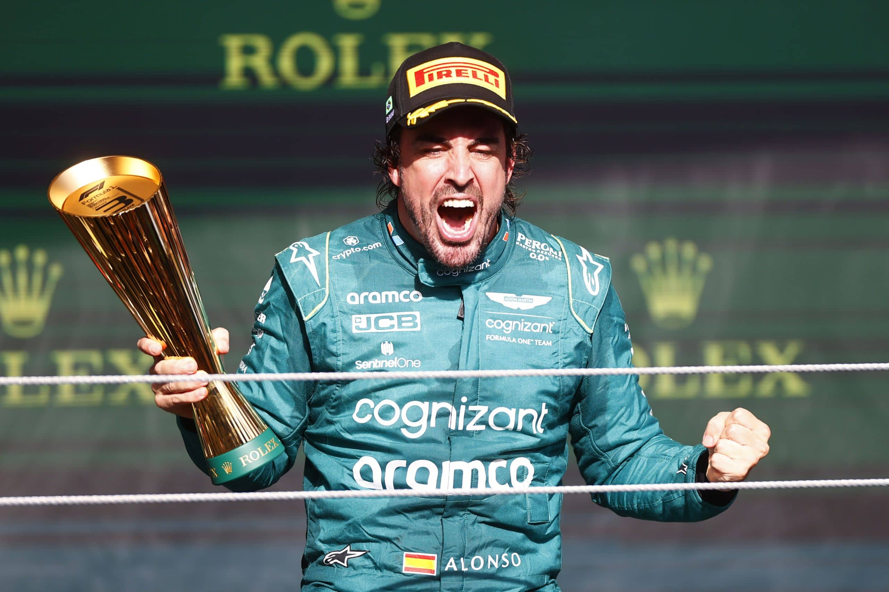

.png)
Fernando Alonso – El Nano
Fernando Alonso è uno dei piloti più iconici della storia della Formula 1. Con due titoli mondiali conquistati con la Renault nel 2005 e nel 2006, è noto per la sua aggressività in pista, intelligenza tattica e capacità di ottenere il massimo anche da vetture non competitive. La sua carriera lo ha visto correre per i team più importanti e vivere una delle storie più longeve e intense nella storia del motorsport.
2005 – Il Primo Titolo Mondiale
Fernando Alonso al volante della Renault R25 nel 2005.
Nel 2005 Alonso diventò il più giovane campione del mondo della storia (record poi battuto), interrompendo l’egemonia della Ferrari e di Michael Schumacher. Con 7 vittorie e una straordinaria costanza, fu il simbolo della nuova generazione di piloti. La Renault R25 si rivelò veloce e affidabile, ma fu il talento di Alonso a fare la differenza nei momenti decisivi.
2006 – La Difesa del Titolo
Alonso difende il titolo contro un agguerrito Schumacher.
Il 2006 fu l'anno della consacrazione. Alonso lottò testa a testa con Michael Schumacher in una delle stagioni più emozionanti del decennio. La vittoria a Suzuka fu decisiva per conquistare il secondo titolo consecutivo. Il duello tra i due campioni rappresentò il passaggio del testimone da una leggenda all'altra.
Gli Anni in Ferrari

Alonso nel 2012: una delle stagioni più memorabili senza titolo.
Dal 2010 al 2014 Alonso fu pilota Ferrari. Pur senza vincere un titolo, fu protagonista di stagioni eccezionali, in particolare nel 2010 e nel 2012, dove arrivò secondo con una macchina inferiore. La sua dedizione e resilienza lo resero amatissimo dai tifosi della Scuderia, tanto da essere considerato uno dei migliori piloti Ferrari mai campioni del mondo con il team.
Il Ritorno con Alpine e Aston Martin
2023: Alonso torna sul podio con Aston Martin.
Dopo un periodo lontano dalla F1, Alonso è tornato con Alpine nel 2021 e poi ha sorpreso tutti nel 2023 firmando per Aston Martin. Il suo podio in Bahrain ha dimostrato che, anche a 41 anni, Alonso ha ancora il talento e la grinta per lottare ai massimi livelli. Oggi rappresenta l'esperienza e la passione pura per le corse. Al giorno d'oggi possiede 32 vittorie, il mondo della F1 aspetta la sua 33esima vittoria: "LA 33".
Caschi Iconici di Fernando Alonso

2006 – Il casco blu e giallo con motivi asturiani nei suoi anni d'oro in Renault
2010 – Casco rosso-blu con dettagli dorati nel debutto con Ferrari
2023 – Verde fluo Aston Martin con tributo alla bandiera spagnola